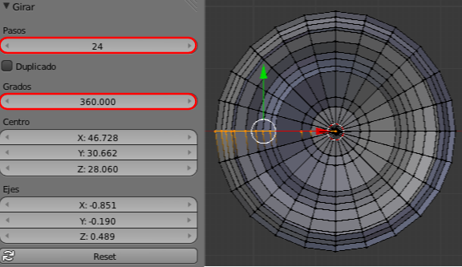

Girar
Está todo preparado para hacer el giro alrededor del eje a excepción de un detalle: tenemos que seleccionar todos los vértices "A".
Nos vamos al cuadro de Herramientas ("T") y pulsamos Girar. Ocurren dos cosas
- Hay efectos en el editor Vista 3D (no tocamos nada, es importante).
- Se han desplegado en el cuadro Herramientas "T" las opciones para editar Girar. Son como las opciones de cualquier primitiva: si editamos algo en Vista 3D, las opciones desaparecerán; pero podemos navegar (hacer órbita, zoom...)
Debemos cambiar:
- Pasos. De 9 a 24.
- Grados. De 90.000 a 360.000.

El resultado en perspectiva es muy atractivo, sin duda.
Pero en realidad no todo está perfecto. Han surgido dos problemas: uno seguro y otro posible. El primero de ellos saltará a la vista nada más que le apliquemos a la ánfora el Modificador de Subdivisión (sobre todo si lo vemos desde Modo Objeto  ). El segundo problema lo mencionaremos algo más adelante.
). El segundo problema lo mencionaremos algo más adelante.
¿Y si la malla es cerrada...?
- Saca un cubo (Añadir/Malla/Cubo).
- Colócate en punto de vista superior ("NumPad 7") y haz clic para colocar el Cursor 3D fuera de ese cubo.
- Pasa a Modo Edición
 y selecciona todos los vértices ("A").
y selecciona todos los vértices ("A").
- Usa la Herramienta ("T") Girar con Pasos: 8 y Grados: 360.
Prueba otros datos y recuerda que si el último módulo se superpone al original debes después ocuparte de los puntos dobles.